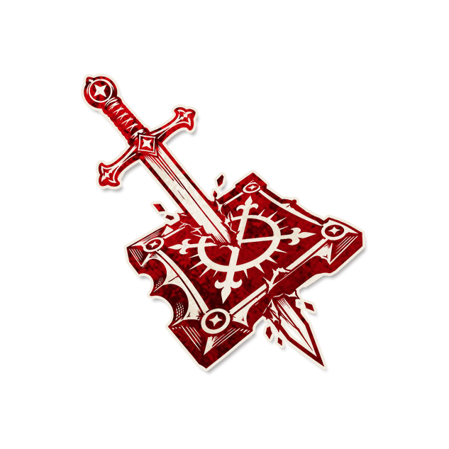

圣裁

角色配置
- 角色类型：恶魔
每个夜晚*，你要选择一名玩家：他死亡。镇民产生的信息不会与他上一次产生信息的正误相同。
以上配置来自最终 JSON 合集；以下保留原文档说明（如有）。
背景故事
“真相，从来不是一成不变的。”
角色作者
神奇的雪淞儿
角色能力
每个夜晚*，你要选择一名玩家：他死亡。镇民产生的信息不会与他上一次产生信息的正误相同。
角色简介
圣裁不仅每夜夺走一条生命，更在悄无声息间扭曲着镇民对真相的感知。他的能力包含两个部分：
每夜杀人：与大多数恶魔一样，圣裁每个夜晚选择一名玩家，该玩家死亡。
信息正误干扰：镇民所获得的信息，其正误状态不允许与该镇民上一次获得信息时相同。如果某位镇民上一次得到的是正确信息，这一次就必须得到错误信息；反之亦然。
范例
小王是一名占卜师。他在第一个夜晚选择了两名玩家，其中一名是恶魔。说书人按正常规则告知他“有恶魔”——这是正确信息。
第二个夜晚：占卜师再次使用能力。由于他上一次得到的是正确信息，这一次说书人必须给出错误信息。他这次选择的两名玩家中仍然有恶魔，说书人要告诉他“没有恶魔”。
第三个夜晚：占卜师又一次使用能力。他上一次得到的是错误信息，因此这一次必须得到正确信息。他选择到了“眼中钉”玩家和一名镇民，两名玩家都不是恶魔，因此他得知“没有恶魔”
运作方式
原文档未填写运作方式，请结合角色能力与规则细节查阅。
提示标记
"死亡",
"信息正确",
"信息错误"
规则细节
《信息干扰能力的优先级》：
目前游戏中存在4种信息干扰效应（1）中毒/醉酒的可对可错模式；（2）类似涡流的必对/必错模式；（3）圣裁的不能对/不能错模式；（4）煽动者的对错翻转模式。
先说（4），对错翻转在（1）（2）（3）全部结算完毕后，在结果上叠加结算，类似“最终决定权”。
（1）的优先级小于（2）和（3），存在（2）或（3）就没有必要讨论（1），这从结果要求方面是显而易见的。
我们规定：（3）的优先级大于（2），如果（2）和（3）同时存在，且对结果的要求矛盾，则按照（3）处理，这是因为在游戏普遍采用的语言中，“不能”的力度会大于“能”，“不许”的力度会大于“许”。放到我们的例子中，就是“不能正确”大于“必定正确”，“不能错误”大于“必定错误”。
如果您的剧本创作有特殊需要并且不打算按这个规则执行，请在剧本中予以特殊说明。
角色信息
●英文名：
●角色类型：
●角色能力类型：